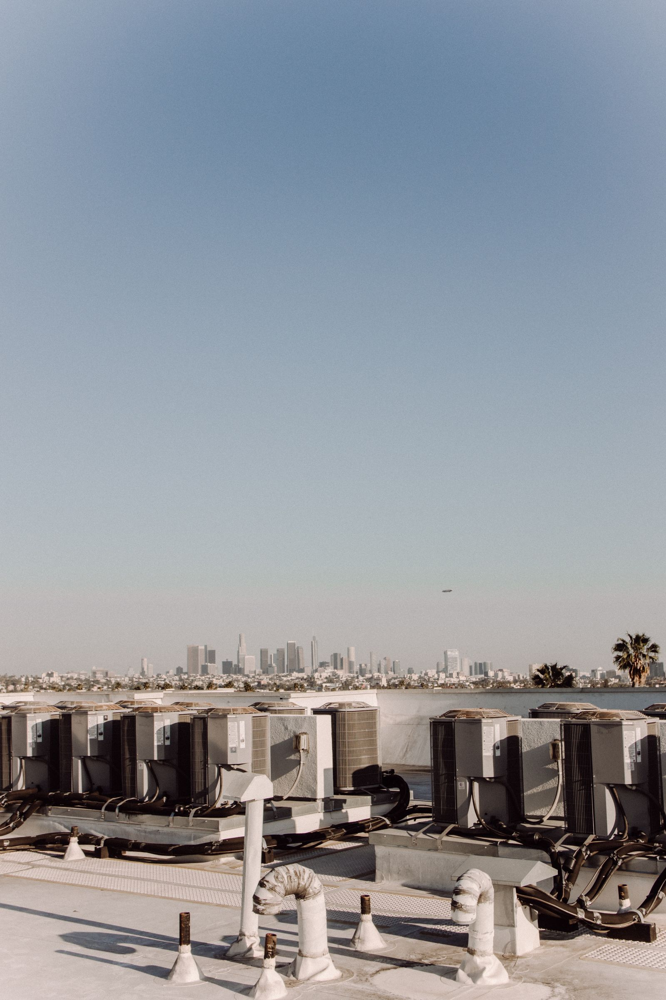

مكيفات جديدة: بيع وتركيب
وحدات جديدة سبليت وشباك وكاسيت ومخفية وباكج من جري وميديا وإل جي وسامسونج ويورك وكاريير، بالحجم الصحيح وبأيدي فرقنا.
المزيد ←
الباز للهندسة تبيع وتركّب مكيفات جديدة، وتستبدل وتحدّث المكيفات القديمة، وتشتري وحدتك القديمة ضمن سعر الجديدة. أنظمة سبليت وكاسيت ومخفي وباكج وVRF، مع عقود صيانة وإصلاح على مدار الساعة في جميع أنحاء الكويت.
من اختيار الوحدة المناسبة إلى إبقائها تعمل لسنوات، فنيّونا يتولّون كل خطوة بأنفسهم.
وحدات جديدة سبليت وشباك وكاسيت ومخفية وباكج من جري وميديا وإل جي وسامسونج ويورك وكاريير، بالحجم الصحيح وبأيدي فرقنا.
المزيد ←المكيف الذي تجاوز ثماني إلى عشر سنوات يكلّفك في الكهرباء أكثر من ثمن استبداله. نفحصه ونفكّه ونركّب وحدة جديدة موفّرة للطاقة، وغالباً في اليوم نفسه لوحدات السبليت.
المزيد ←شغّالة أو معطّلة، نشتري وحدات السبليت والشباك والكاسيت والمخفي والباكج المستعملة من أي ماركة. نقداً، أو خصماً من سعر وحدة جديدة. الفك والنقل مجاناً.
المزيد ←تصميم وتركيب أنظمة VRF والتبريد المركزي للفلل والمكاتب والمعارض والمباني متعددة الطوابق، مع تقسيم المناطق والتحكم.
المزيد ←تصنيع دكت من الصاج المجلفن والألواح المعزولة مسبقاً، ودكت مرن، وعزل، وتنظيف الدكت للمباني الجديدة والتجديدات.
المزيد ←تنظيف دوري وفحص للغاز والكهرباء للمنازل والفلل والمواقع التجارية، مع أولوية في الاستجابة عند أي عطل.
المزيد ←فحص وتشخيص، وتعبئة غاز الفريون، واستبدال الكمبروسر واللوحات الإلكترونية، وتنظيف عميق، وخدمة طوارئ بعد ساعات العمل.
المزيد ←كمبروسرات ومواتير مراوح ولوحات تحكم وثرموستات ومواسير نحاس وغاز فريون وفلاتر، متوفرة في المخزون للتسليم السريع.
المزيد ←أسعار توريد فقط لوحدات جديدة بالكميات للمقاولين والمطوّرين وملّاك العقارات ومشاريع التجديد، مع التوصيل إلى جميع مناطق الكويت.
المزيد ←نشتري مكيفك القديم، ونخصم قيمته من سعر الوحدة الجديدة، ونتولى الفك والتركيب والتخلص من القديم في زيارة واحدة.
أرسل صورة للوحدة ولوحة بياناتها ونرد عليك بالسعر في اليوم نفسه.

نقوم بعمل واحد ونتقنه: إبقاء منازل الكويت ومنشآتها باردة في صيف يتجاوز 50 درجة.
نماذج من أعمال التبريد السكنية والتجارية والمؤسسية التي نفّذتها فرقنا.
نقيس المساحة ونفحص التغذية الكهربائية ونحسب حمل التبريد قبل أن نوصي بأي شيء.
عرض مفصّل يوضح موديل الوحدة والمواسير والدكت والعمالة والضمان، مخصوماً منه قيمة وحدتك القديمة.
فنيّونا يفكّون الوحدة القديمة ويركّبون الجديدة ويفرّغونها ويشحنونها ويشغّلونها، ويأخذون القديمة معهم.
تنظيف وفحص دوريان يحافظان على الكفاءة ويقلّلان الأعطال، مع تغطية على مدار الساعة عند الحاجة.
الباز للهندسة شركة تكييف وتبريد مقرّها الكويت. نبيع ونركّب مكيفات جديدة سبليت وشباك وكاسيت ووحدات مخفية، ونستبدل ونحدّث المكيفات القديمة، ونشتري المكيفات المستعملة نقداً أو كخصم على وحدة جديدة، ونصمّم أنظمة التكييف السنترال (المركزي) وVRF للفلل والمكاتب والمعارض، ونصنّع الدكت والعزل الذي يجعل التكييف المركزي يعمل في حر الكويت.
وبعد التركيب، تحافظ عقود صيانة التكييف السنوية على نظافة كل وحدة وكفاءتها، ويستجيب فريق إصلاح المكيفات لمكالمات الطوارئ على مدار الساعة، ويوفر مخزن القطع لدينا الكمبروسرات والمواتير ولوحات التحكم وغاز التبريد للتسليم السريع. نخدم مدينة الكويت وحولي والسالمية والفروانية والجهراء والأحمدي وكل المناطق بينها. Air conditioning in Kuwait in English.
أخبرنا عن المكان أو المشكلة أو الوحدة التي تريد بيعها وسنعود إليك خلال 24 ساعة.